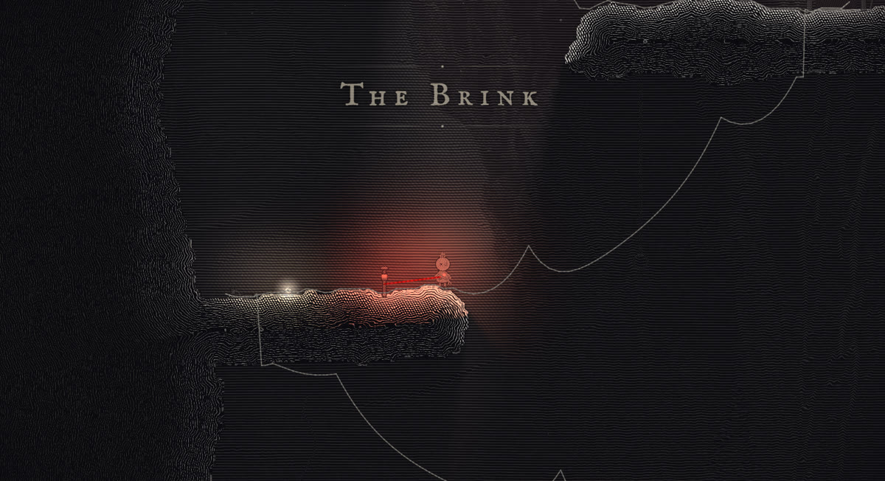
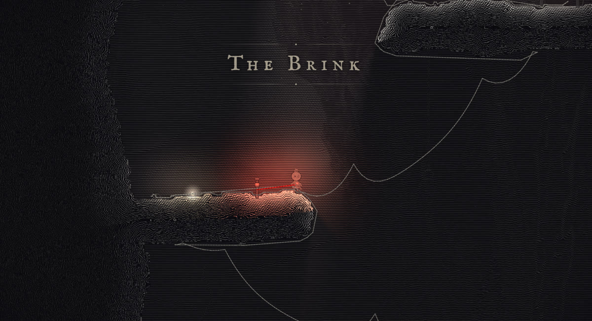
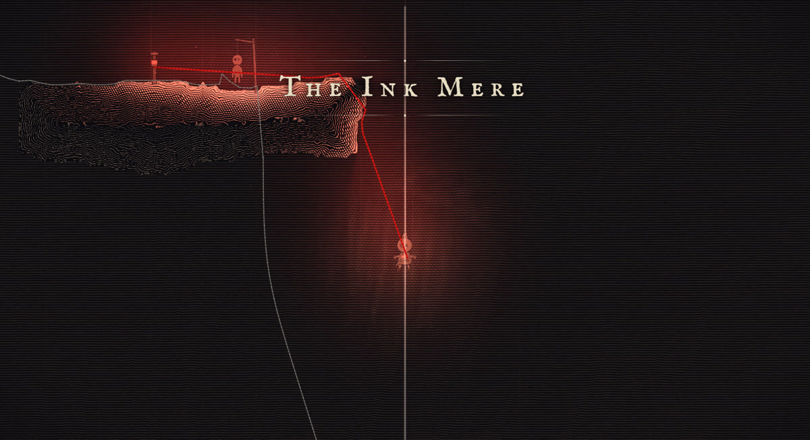
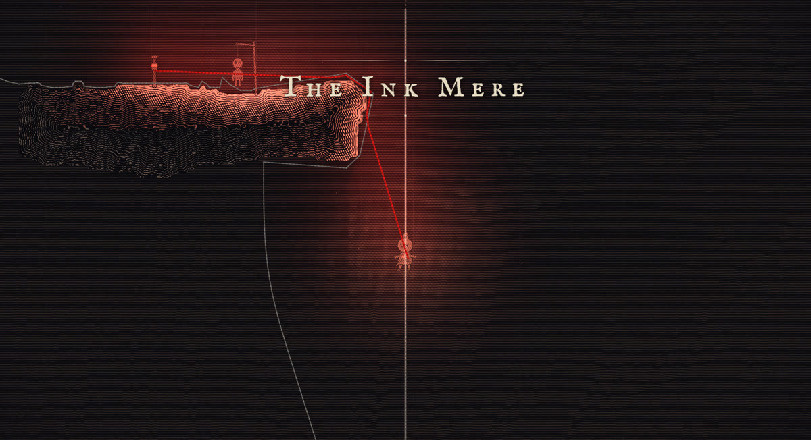
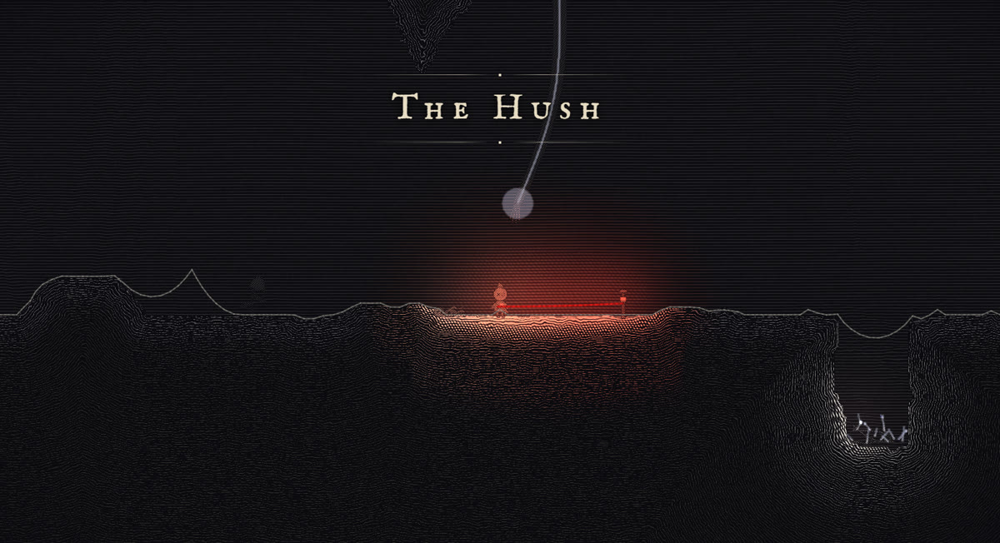
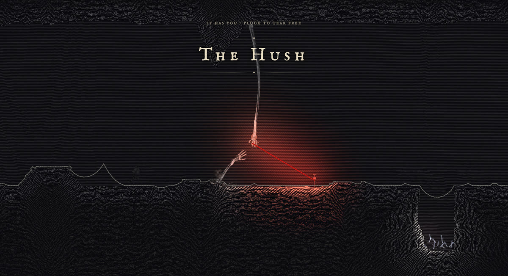

The thread goes roundthe hands do not miss
Four of the things you listed: the thread no longer passes through rock, the hands are a real danger, they sound like earth, and nothing made of rope keeps playing after them. The brass is gone from the Hall of Chairs and from the game. The new ending has its own page.
Also the thread is sometimes going throught the rocks, please make sure it doesn't happen.


BeforeAfterDrag the thread to compare


BeforeAfterDrag the thread to compare
I let random players loose from every pole in the game, running, jumping, gripping and climbing, and measured how much of the drawn thread lay inside rock in every frame.
| Measured | Before | Now |
|---|---|---|
| Frames with red thread more than 6 cm inside rock | 31.4 % | 0.2 % |
| Deepest cut found | 1.13 m | 0.11 m |
| Her grey thread, length inside rock | 64.7 m | 0.2 m |
| All 12 ring swings, release times that land | — | same results |
Also please make the hands a bit harder, right now I can just walk past them and not a single one touches me with 0 effort.


BeforeAfterDrag the thread to compare
They used to creep out at less than your running speed, and one pluck every three seconds kept all of them away. Now the earth crumbles for half a second, then an arm bursts out at where you are going to be.
| Bots crossing the Hush, 12 runs each | First half | Long gallery |
|---|---|---|
| Just walking (before: got through untouched) | 0 of 12 survive | 0 of 12 survive |
| Plucking 0.35 s after each warning | 12 of 12, never caught | 12 of 12, caught twice a run |
| Never plucking until caught | 12 of 12, caught 4 times | 12 of 12, caught 3 to 4 times |
| Hammering the key | 12 of 12, caught 4 to 5 times | 12 of 12, caught twice |
please make sure there is no contant thread tension sound playing, after the hands popping out there is always some thread sound which is irritating. And the hands popping out should make some dirt sound, not the thread sound.
And please, remove those trumpets music from the chairs room and never use it again in this game.
The track was Kevin MacLeod's “Peaceful Desolation”. Its file, its build recipe and its credit are deleted, and the project notes say not to use it or any brass. The Hall of Chairs has no music now: a low room tone, wood settling now and then, and very far down something like people talking, too low to make out.
The thread, the hands and the routes were checked by running the game's real physics outside the window, thousands of simulated seconds at a time. The pictures come from the hidden test window. I can't listen, so the sounds were checked by their spectrograms and levels: please tell me if one of them sits wrong.
app/src/route.jsNew: how deep a line runs into rock, the way round it, and laying a line along the rock's face.app/src/thread.js · world.jsGripping, wrapping, tying and drawing use it; her grey thread too.app/src/deep.jsHAND: every timing of the hands in one line.app/src/audio.js · scripts/audio/build_audio.pyThe new sounds and how they are built; the old music removed.